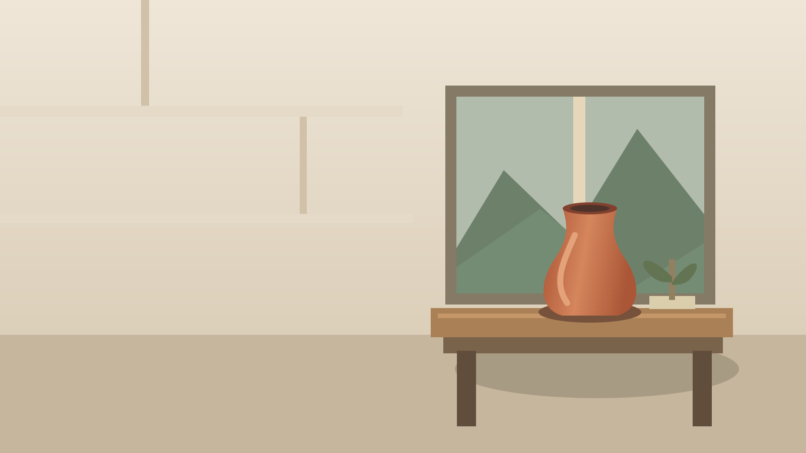

Images support a claim
Seven optional compositions, not seven reasons to add decoration.
Original fictional SVG scene; no photograph, brand, or measured evidence.

Reserve space
for the claim
The fade protects text, not an overcrowded scene.
Hero: copy stays inside the opaque half in both themes.
Separate the claim from the scene
Timber, clay, and stone give the fictional workshop a coherent material story.
Split: independent text remains legible without an overlay.
Establish context without taking the stage
Focus on one subject
Circle: preserve the rim and base; do not clip identifying details.
Keep a little more context
Oval: widen the subject's setting without competing with the claim.
Direction needs crop-safe space
Diagonal: leave generous margins around the subject before cutting the edges.
Let the material shape the frame
Organic: a restrained contour echoes handmade clay, not arbitrary decoration.
Choose the image
that makes the claim clearer.